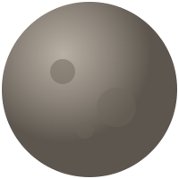
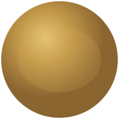
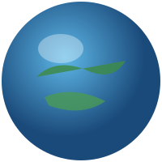
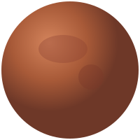
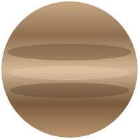
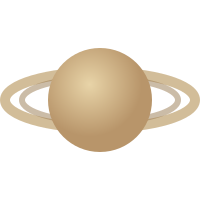
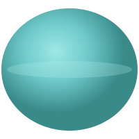
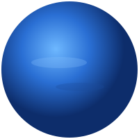

Каталог планет
База данных верифицированных объектов Солнечной системы. Нажмите на карточку любого небесного тела, чтобы запустить симуляцию орбиты, получить актуальные спектрографические карты, температурные индексы и изучить физические характеристики ядра.

Меркурий
Ближайшая к Солнцу планета. Железное ядро составляет 85% её радиуса. Из-за отсутствия плотной атмосферы поверхность испещрена миллионами кратеров и испытывает экстремальные температурные перепады.
Подробнее
Венера
Экстремальный двойник Земли. Окутана сверхплотной атмосферой из углекислого газа с облаками из серной кислоты. Сильнейший парниковый эффект разогревает поверхность до температур, плавящих свинец.
Подробнее
Земля
Уникальная колыбель биосферы. Обладает идеальным гидросферным балансом, мощной азотно-кислородной атмосферой и тектонической активностью, непрерывно обновляющей минеральный состав коры.
Подробнее
Марс
Перспективный объект колонизации. Пустынный мир с разреженной атмосферой и оксидом железа в грунте. Хранит колоссальные запасы замерзшей воды в глубоких полярных шапках и под реолитом.
Подробнее
Юпитер
Доминантный газовый гигант. Обладает мощнейшим магнитным полем и удерживает вокруг себя грандиозную систему из 95 спутников. Атмосфера состоит из водорода со штормами размером с Землю.
Подробнее
Сатурн
Икона астрономии. Планета с рекордно низкой плотностью, способная плавать в воде. Кольца представляют собой сложнейшую структуру из миллиардов ледяных глыб, обломков комет и пыли.
Подробнее
Уран
Аномальный ледяной гигант. Имеет уникальное боковое вращение с наклоном оси в 98 градусов, вероятно вызванное столкновением с крупным протопланетным телом на заре формирования системы.
Подробнее
Нептун
Самый удаленный и загадочный мир. Сверххолодный ледяной гигант, в верхних слоях которого бушуют самые яростные сверхзвуковые ветра в Солнечной системе, достигающие скорости 2100 км/ч.
Подробнее